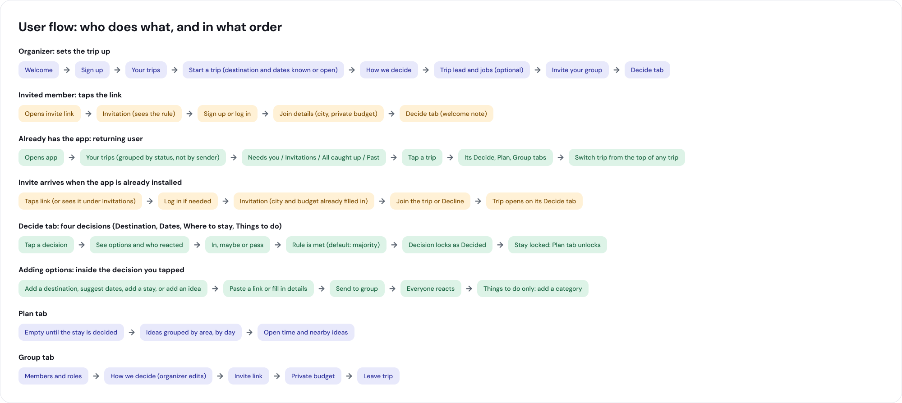
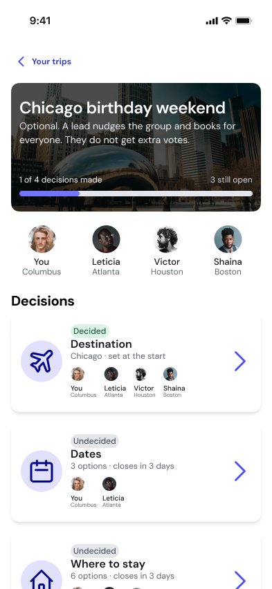
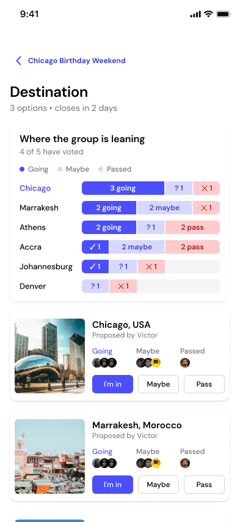
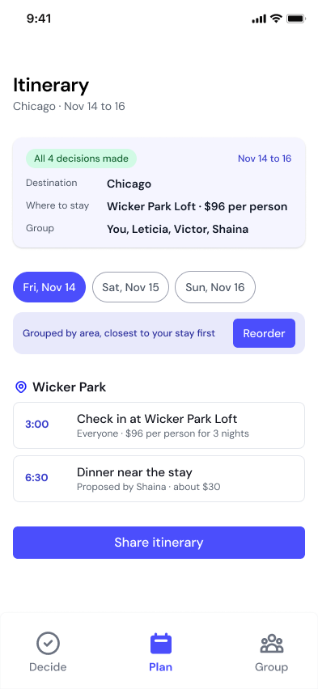
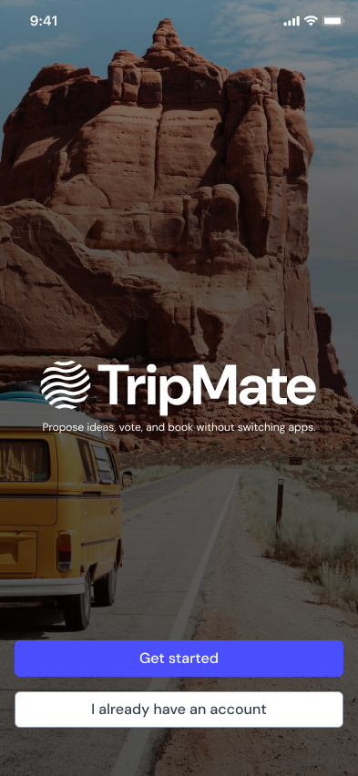
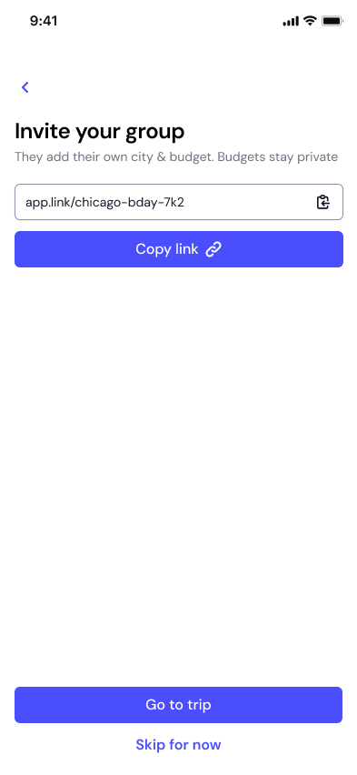
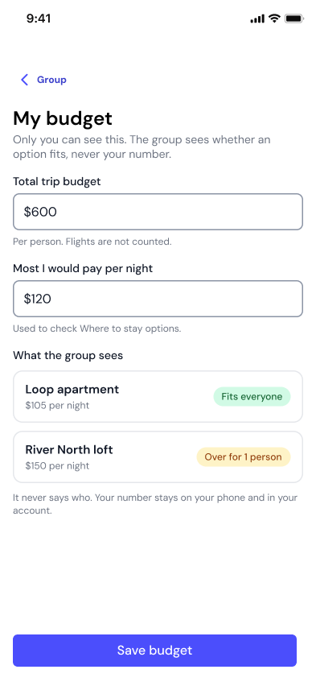

TripMate
TripMate was my individual final project for a design class, completed between September and December 2026. It is a mobile app for solo travellers who come together from different cities for one group trip. One person starts the trip and invites the group with a link, and everyone decides four things together: the destination, the dates, where to stay, and things to do. Each decision locks once the group’s rule is met, a majority by default, and the Plan tab turns those agreed choices into a day by day itinerary. I researched the problem, interviewed travellers, built a first prototype, tested it, and iterated on what I learned.
View in figma (opens in a new tab)Case Study04/05
Planning a group trip shouldn’t live in the group chat.
01
THE PROBLEM
Solo travellers joining a group trip from different places are used to making their own decisions. Agreeing on plans remotely, with people in other cities, turns every choice into friction and stress.
02
THE CONSTRAINT
This was a final project with a fixed class deadline, so research, design and testing all had to fit within the semester, and I could only interview a small sample of travellers.
03
THE APPROACH
I started with research and interviews, built a first prototype, tested it with users, and iterated. The final design breaks the trip into four clear decisions with visible voting, locks each one when the group agrees, and keeps everyone’s budget private.
USER FLOW

SELECTED MOBILE SCREENS01/01
Swipe to see more screens →



MORE SCREENS



REFLECTION
Autonomy is the hard part.
Group travel is cumbersome for solo travellers because they are used to having autonomy. When they plan alone, every decision is theirs and instant; in a group, each choice needs agreement from people in other places. Designing TripMate taught me to respect that independence while still helping the group reach decisions together.